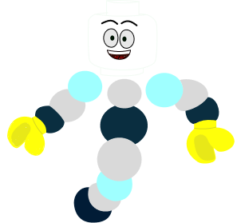

O CRISPR-Cas9 é uma tecnologia revolucionária que funciona como uma espécie de "tesoura
molecular" de alta precisão. Inspirado em um mecanismo de defesa natural que as bactérias
usam contra vírus, esse sistema permite que cientistas editem o DNA de qualquer organismo
vivo com uma exatidão sem precedentes.
Com ele, é possível localizar um gene específico que está causando uma falha ou doença,
recortá-lo e até mesmo substituí-lo por uma sequência saudável, reescrevendo o código da
vida de forma simples e rápida.
O que é o CRISPR-Cas9?
CRISPR-Cas9
O CRISPR-Cas9 é uma tecnologia revolucionária que funciona como uma espécie de "tesoura molecular" de alta precisão. Inspirado em um mecanismo de defesa natural que as bactérias usam contra vírus, esse sistema permite que cientistas editem o DNA de qualquer organismo vivo com uma exatidão sem precedentes.
Com ele, é possível localizar um gene específico que está causando uma falha ou doença, recortá-lo e até mesmo substituí-lo por uma sequência saudável, reescrevendo o código da vida de forma simples e rápida.
O que é o CRISPR-Cas9?
Localização
 <<<<<<< HEAD
=======
>>>>>>> 17fdb522489690439a28ed01096d49ba17aa321e
<<<<<<< HEAD
=======
>>>>>>> 17fdb522489690439a28ed01096d49ba17aa321e
PRINCIPAIS ETAPAS
O sistema utiliza uma molécula guia de RNA programada em laboratório para rastrear o genoma e encontrar o ponto exato do gene de interesse.
=======O sistema utiliza uma molécula guia de RNA programada em laboratório para rastrear o genoma e encontrar o ponto exato do gene de interesse.
>>>>>>> 17fdb522489690439a28ed01096d49ba17aa321eO corte

Ao encontrar o alvo, a proteína Cas9 (a tesoura) entra em ação e realiza um corte preciso nas duas fitas da hélice do DNA.
O corte
Ao encontrar o alvo, a proteína Cas9 (a tesoura) entra em ação e realiza um corte preciso nas duas fitas da hélice do DNA.
A Reparação
 <<<<<<< HEAD
<<<<<<< HEAD
A célula ativa seu mecanismo natural de regeneração. Nesse momento, cientistas podem inserir uma nova sequência genética correta para corrigir o erro.
=======A célula ativa seu mecanismo natural de regeneração. Nesse momento, cientistas podem inserir uma nova sequência genética correta para corrigir o erro.
>>>>>>> 17fdb522489690439a28ed01096d49ba17aa321e